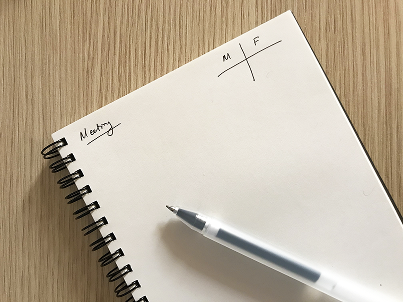

Excluding can be the result of a taboo, or of a bias.
Virginia Valian’s Why so slow makes the case for tracking and recording gender biases in our daily life – a way to raise consciousness and attention. Here is a simple device that we implemented in our notebooks. Whenever we attend a meeting, we draw a horizontal rectangular box in the top right corner of the page with our notes for the meeting, we split it into two square boxes, and we write in the left box the number of women attending, in the right box the number of men attending. No big deal: a box, two figures. Try it out and you will be surprised (or maybe not).
Possibly Moleskine and other notebook makers could make it a permanent (light gray, almost invisible) feature of their pages?
